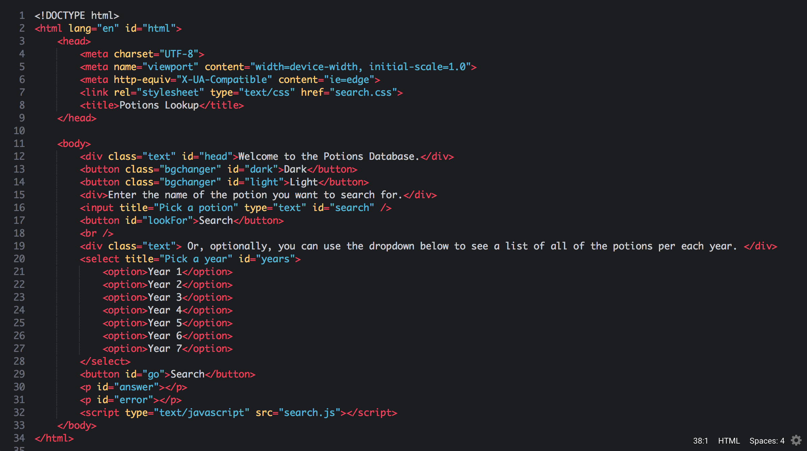
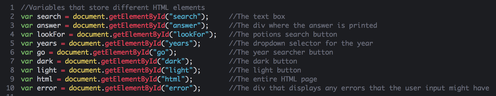
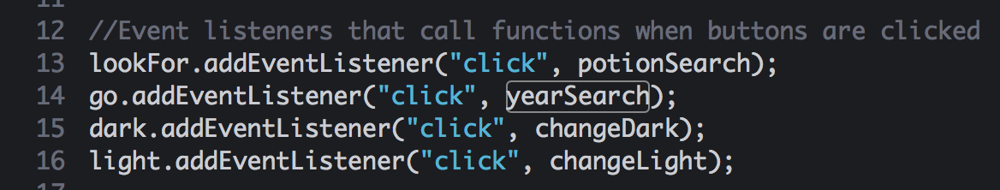
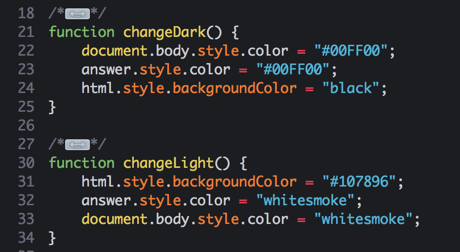
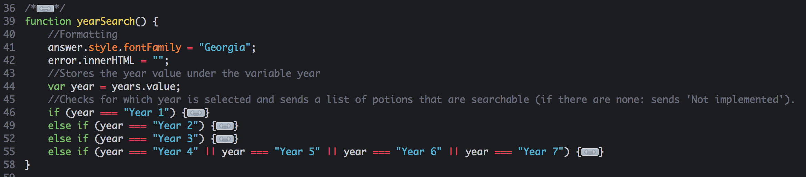
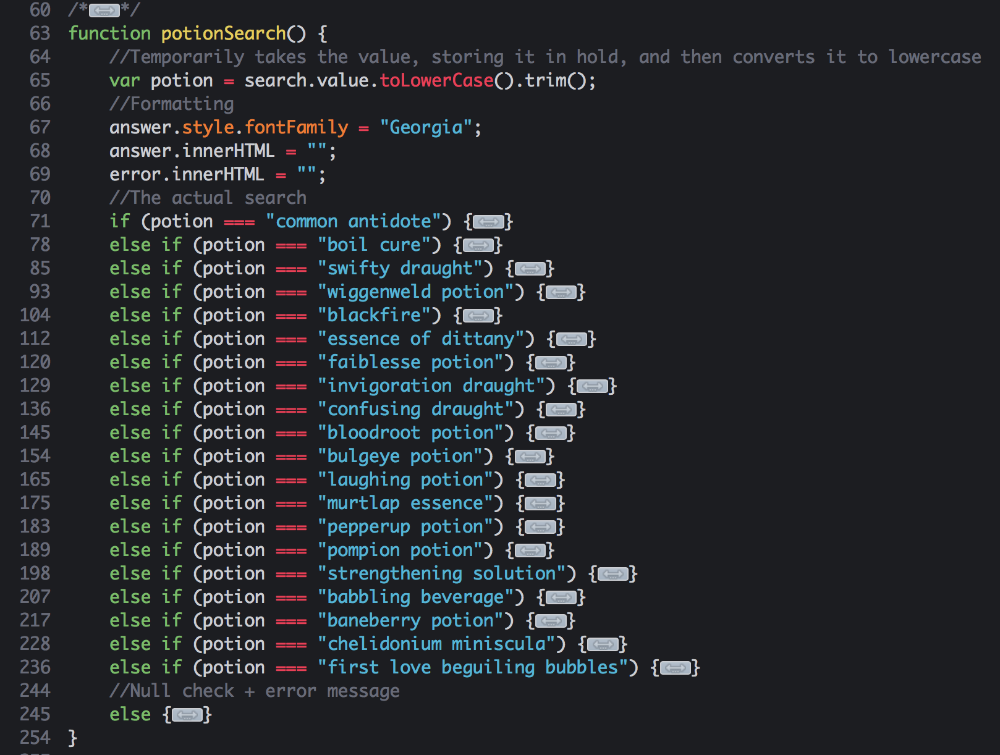
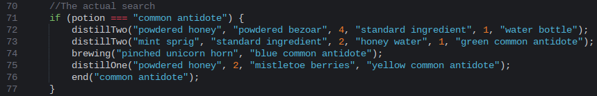
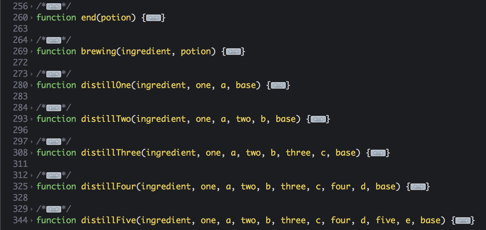

You may be wondering-- how did I do all of this in the first place, and when did I decide to do what I did?
This here is the HTML page of my how-to page. Within the head tags is the basic setup for the page, the link to the appropriate style sheet, and the title. After that comes the body tags. The first element within the body tags is the div class with the class text and the id head. Both of these tags allow for easier styling. The next element in the page are two buttons, both with the "bgchanger" class, which gives them similar formatting. They also, however, have separate ids which allows them to be manipulated separately, and allows each button to do something different onclick. Then, there is another div which just holds the explanation text. Next comes the text input with a search button. This is where a direct potion lookup would go. After this comes the the dropdown menus that allow the user to pick a year to list all of the potions from. There is a button which triggers the function that checks to see what was selected. Under this comes two paragraph tags which are what allows the answer and the errors to be displayed. Then the last thing links to the JavaScript.
This image shows all of the variables that are using in order to store the HTML elements that were gotten by id.
This image shows all of the event listeners that keep track of when elements are clicked.
This image shows the two functions that are required in order to have the text and the background changed depending on whether the light or the dark button is clicked. The two options are a blue and white, and a green and black. I picked the first color scheme because of the sky/water like color which relates to potions. The second color scheme was picked becuase of its similarity to a terminal.
This image shows the function that is used to list all of the potions that belong to one year.
This shows all of the various potions and how they are checked, and how many there were.
This is an example of an actual recipe written in this method.
In order to save time, I made it so that the recipe function only needed to have the ingredients and the amounts inputted in. These functions converted the ingredients and the numbers into the functions that created the paragraphs.